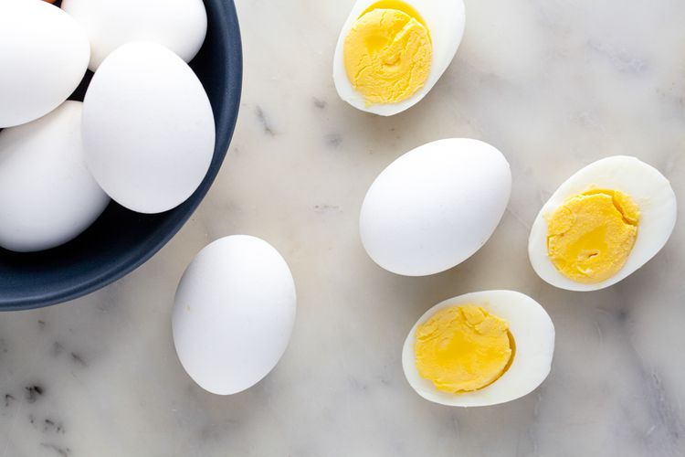

Eggs

Description
The size, temperature, and age of eggs all affect how easy they peel after hard boiling. For the best results, we recommend using large eggs straight from the fridge that are a week or two old.
Ingredients
- 6 to 12 large eggs, straight from the fridge
Steps
- Add the eggs to a saucepan and cover with water
- Bring to a rolling boil
- Turn off the heat, cover, and let sit
- Strain and run under cold water
- Peel or store for later